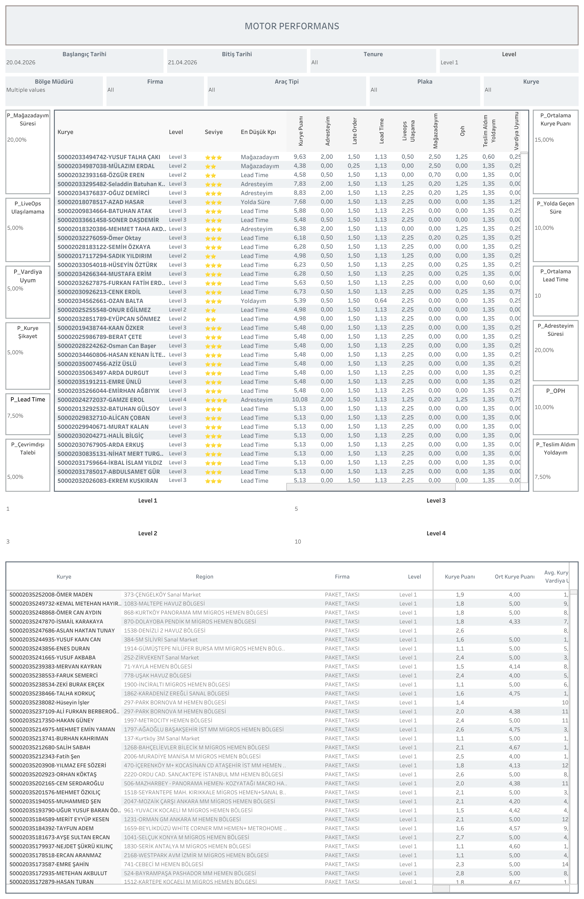

Canlı Rapora Erişin
Güncel motor performans verilerini Tableau üzerinde interaktif olarak görüntüleyin.
Dashboard Hakkında
Ne Gösterir?
Motor Performans dashboard'u, motor kuryelerin bireysel performansını çok boyutlu ve ağırlıklı KPI sistemiyle değerlendirir. Kurye puanı, lead time, mağazadayım süresi, LiveOps ulaşılamaması, OPH ve vardiya uyumu metrikleri ile seviye bazlı dağılım sağlar.
- Ağırlıklı KPI Sistemi: P_Mağazadayım Süresi (%20), P_Adresteyim Süresi (%20), P_Ortalama Kurye Puanı (%15), P_Yolda Geçen Süre (%10), P_OPH (%10), P_Lead Time (%7,50), P_Teslim Aldım Yoldayım (%7,50), P_LiveOps Ulaşılama (%5), P_Vardiya Uyum (%5), P_Kurye Şikayet (%5), P_Çevrimdışı Talebi (%5)
- Bireysel Kurye Tablosu: Her kurye için level, yıldız seviyesi (1-3 yıldız), en düşük KPI, kurye puanı, Adresteyim, Late Order, Lead Time, LiveOps ulaşılama, Mağazadayım, OPH, Teslim Aldım Yoldayım ve Vardiya Uyumu değerleri
- Seviye Eşikleri: Level 1: 1 puan, Level 2: 3 puan, Level 3: 5 puan, Level 4: 10 puan
- Bölge Bazlı Özet: Kurye, bölge, firma, level, kurye puanı, ortalama kurye puanı ve ortalama vardiya uyumu sütunlarıyla detaylı kıyaslama imkânı
- Filtreler: Başlangıç/bitiş tarihi, tenure, level, bölge müdürü, firma, araç tipi, plaka ve kurye filtreleri
Dashboard Önizleme

Motor Performans — Tableau